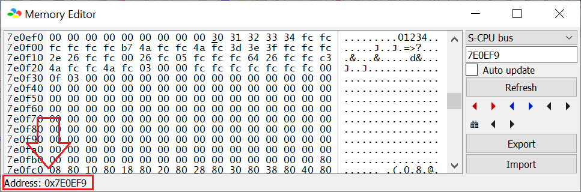

So you want to edit the HUD to display custom info to the player. Obviously, this requires at least basic ASM knowledge. Fear not! Once you got the pattern down, you'll understand how it works!
You should know by now after reading Ersanio's tutorial[1][2]
on something simple as how to write a value to memory.
I have provided several routines to make writing codes much user-friendly as possible.
Warm-up: SMW's status bar.
Here, consider looking at this image:
RAM address $7E0EF9-$7E0F2E controls what tile to display. How do you modify it? Well you edit the
contents in the mentioned RAM address. There are 2 ways you can edit RAM addresses:
Most recommended: Using Bsnes+, be at a level, go to the menubar on the window, Tools → Debugger.
Now on the Debugger window: → Tools → Memory Editor, and enter on the search bar 7E0EF9. It should now scroll to that address and to know what address
you're editing is displayed at the bottom of the window:

Create an ASM file to run under uberasm tool as level under main: label, and just use LDA #$xx : STA $xxxxxx.
Now, for the RAM address, each byte is each 8x8 tile:
All of these bytes stored in RAM $7E0EF9-$7E0F2E are TTTTTTTT, which means you can only modify the tile number through RAM in-game. You may be wondering, if I wanted to edit the tiles here,
what value should I put? Well, TTTTTTTT is actually what tile number to use, from the tile data. When viewing the tile data stored in GFX28 via YY-CHR,
you can find what tile graphic to use by hovering your mouse over the 8x8 tile you want to use. After this, you should see on the bottom bar of the window showing what tile number that is:
Now you have the value you need. Just write that desired tile number to any tile number you want to write (either debugger or uberasm, if uberasm tool, you have to save, insert to your game, and run it to view the changes). For example, to write an
item box corner tile on the left of the top row, then it is tile number $3A to write at $7E0EF9, if using uberasm tool, its LDA #$3A : STA $0EF9|!addr.
Now hold up, when you play around with the tiles, many tiles will use the wrong palette, well, this is part of the tile properties (in binary, its %YXPCCCTT) thats hard-coded.
Tile data format
Each 8x8 tile is stored as 2 bytes in the binary format of: TTTTTTTT and YXPCCCTT:
TTTTTTTT is the tile number, refers to what tile to use from the tile stored in VRAM.
YXPCCCTT is the tile properties:
TT (ranges from 0-3): Page number.
CCC (ranges from 0-7): Palette number. This refers to what group-4 on the palette to use.
P (0 or 1): Priority (1 is above everything or 0 is behind), effective if the status bar is on the subscreen.
Now depending on what status bar patches you use, there are 2 types of format on how the array of 8x8 tiles in relation to the array of bytes written in:
Every tile have 2 bytes placed one after another, so both tile numbers and properties are alternating
every byte. Therefore, to get to the next 8x8 tile, is a move of 2 bytes instead of one.
Other status bar patches
Further documentation
SMW (or the SNES in general) have layer 3 stored as 2BPP format. Meaning that each pixel will take 2 bits. 2 Bits will give you 4 possible values; 0-3